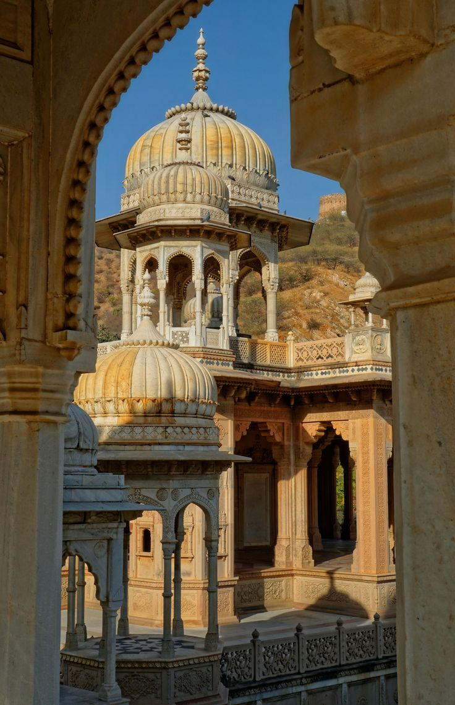
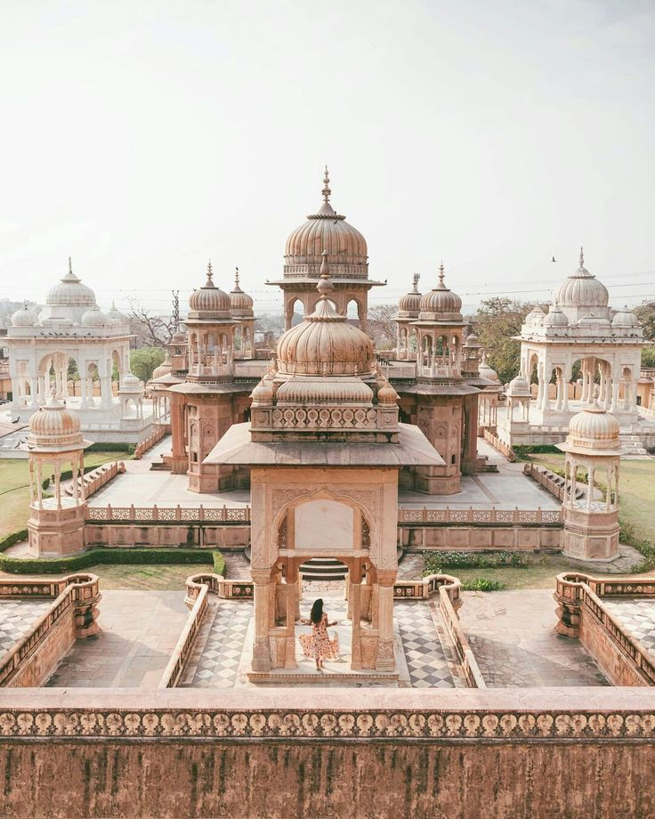
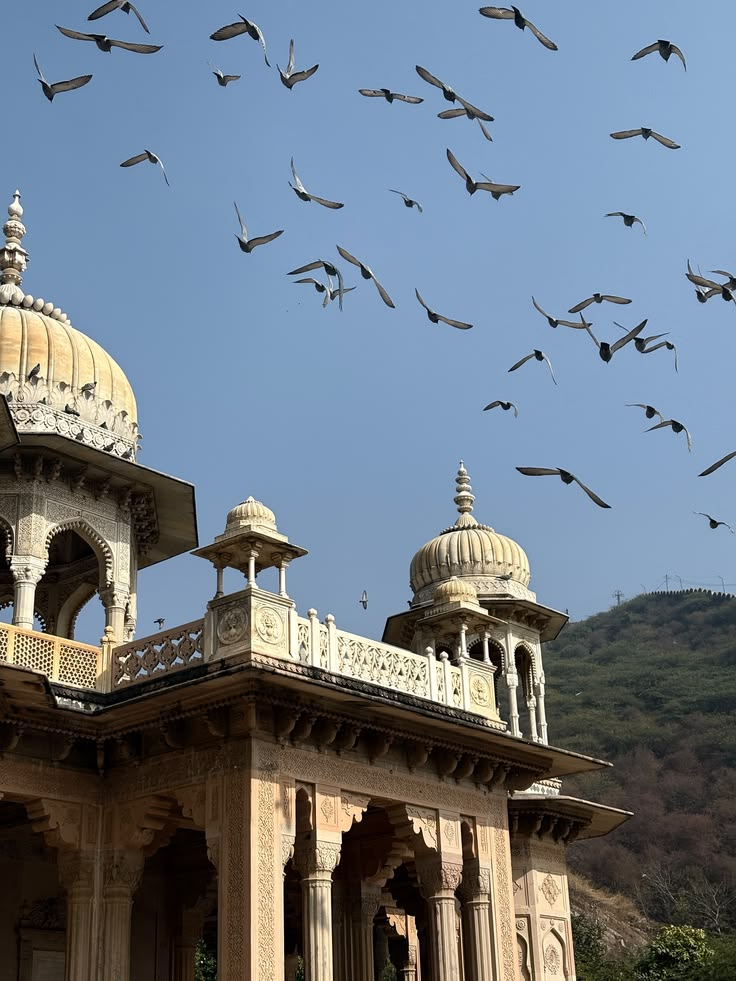

Gaitore Ki Chhatriyan
Royal cenotaphs in marble
- Started
- 1743
- First memorial
- Sawai Jai Singh II
- Style
- Rajput with Mughal influence
- Material
- Sandstone and carved marble
- Location
- Foothills near Nahargarh
- Best time
- Morning light on the marble

About Gaitore Ki Chhatriyan
Gaitore is the royal cremation ground of the Jaipur rulers, set in a quiet valley below the Nahargarh hills. Each ruler's memorial is a domed pavilion, or chhatri, raised on carved pillars.
The chhatri of Jai Singh II is the grandest, with intricately carved marble columns. Carvings on the others show hunting scenes, dancers and religious motifs, and each memorial is a little different from its neighbour.
History
- 1743Jai Singh II dies and becomes the first ruler commemorated at Gaitore.
- 1700s to 1900sSuccessive rulers add their own chhatris.
- TodayThe complex is protected and open to visitors.
Gaitore Ki Chhatriyan through the day

